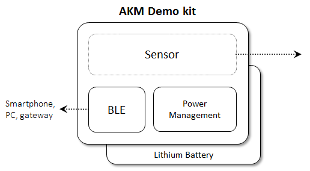

Description
AKM demo kit is design for demo AKM sensors with the help of battery and BLE, as a wireless sensor node for IoT/M2M usage.
It can output raw data for evaluation, also able to develop algorithm for PoC(Proof of Concept). The result can show on end
device, like Android smartphone or PC to monitor. The hardware design and software source code are available as open source
for advanced development.

Application: Smart parking, smart door, digital crown sensor, human present…..(Need corresponding algorithm)
Hardware: Software:
- BLE module: MtM904s (Nordic nRF51822), VCC 3.3 V - Source code: Nordic package + AKM sensor driver
- Battery: Rechargeable lithium battery(3.7 V) - License: GPL (open sourcr)
- Interface: I2C, JTAG/SWD, serial port - IDE: Embits(Free)
- Board size : 30.5 mm x 21.0 mm - Algorithm: contact AKM sales offce
Supported application
Mag sensor • Smart Parking Detect the difference of mag strength when Car parking and leaving. The data would send to system for parking management. • Digital crown sensor Sensing the rotating rate of crown in watch. IR sensor • Smart Door Count the number of people walk in and walk out. • Human Present detect Detect human is present or absence in front of laptop for saving battery power. |  |
Application Specification

Note (1) : Must support BLE protocol
Note (2) : Has mounted sensor board
Hardware Pin Definition

Software list
For three application category "BLE DCS", "BLE GUI" and "Serial Port" evaluation.
We have prepare relative software and firmware for user evaluation.
PC application SW GUI tool(data visualization) Tera Term terminal console Firmware upload SW PC SDK Embitz IDE + GCC Mobile App DCS App | Firmware Devices algorithm Digital Crown Sensor(DCS) Smart Parking Smart Door Human Present detect ... Dongle sample code BLE TX/RX Bridge |
When User use nRF51822 BLE SDK develop firmware and generate binary file . User could follow below
sequence to update BLE demo kit Firmware.
- Plug-In “BLE Demo kit & Sensor” into the socket of “Programming Board”.
- Connect Programming port (4-wire) from “J-link Board” to “Programming Board”
- Slide the Power switch to turn on the Power of “BLE Demokit”
- Connect USB Port from J-link Board to PC
- Run Programming Software “nRFgo Studio” on your PC and Select nRF5X Programming tab in Device Manager
- Erase Memory
- Select the Binary file(hex) and programming of Application on nRF51822 Device
- Check if the Green/ Red LED of BLE devices start flash


Programming
There is one way to program AKM Demokit with J-link Board.
Application
For three application category "BLE DCS", "BLE GUI" and "Serial Port" evaluation with AKM demokit .
User may follow guide to evaluate the application and make your innovation .
- BLE DCS
When user rotate the digital crown. It allows user scroll through text without having to pinch, swipe
or otherwise obstruct the watch display. The digital Crown could support more applications. Such
help you setup the BLE_DCS application.- BLE GUI
During the Application developing . User usually need to collect huge sensor data for analyze. The
BLE_GUI tool make the collect data as visualization, it also support synchronous camera shot and
the application.- Serial Port
When User need to debug the Firmware . Serial Port is a standard tool . User could follow the guide
"Serial_Port" to setup the Serial Port.
Schematic
AK09918/AK09918

EC & IR Sensor Board
AK9970/AK9750

AK9970/AK9753

AK09912
AK09915
BLE Demo kit
MTM904/Sensor board

Programming Board